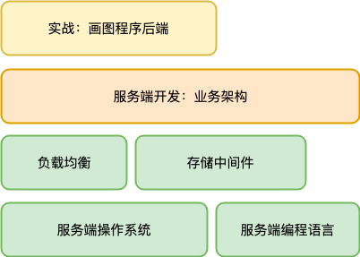
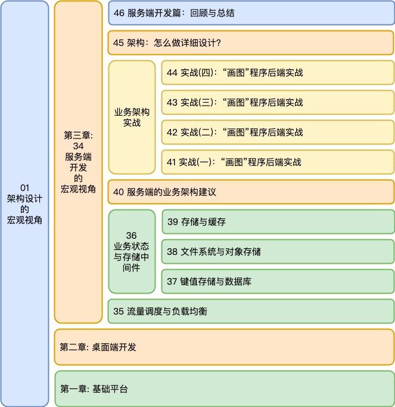
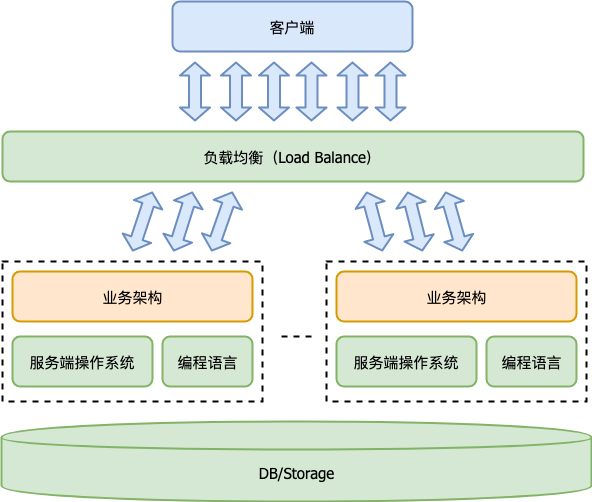

- 00 开篇词 怎样成长为优秀的软件架构师？.md
- 01 架构设计的宏观视角.md
- 02 大厦基石：无生有，有生万物.md
- 03 汇编：编程语言的诞生.md
- 04 编程语言的进化.md
- 05 思考题解读：如何实现可自我迭代的计算机？.md
- 06 操作系统进场.md
- 07 软件运行机制及内存管理.md
- 08 操作系统内核与编程接口.md
- 09 外存管理与文件系统.md
- 10 输入和输出设备：交互的演进.md
- 11 多任务：进程、线程与协程.md
- 12 进程内协同：同步、互斥与通讯.md
- 13 进程间的同步互斥、资源共享与通讯.md
- 14 IP 网络：连接世界的桥梁.md
- 15 可编程的互联网世界.md
- 16 安全管理：数字世界的守护.md
- 17 架构：需求分析 (上).md
- 18 架构：需求分析 (下) · 实战案例.md
- 19 基础平台篇：回顾与总结.md
- 20 桌面开发的宏观视角.md
- 21 图形界面程序的框架.md
- 22 桌面程序的架构建议.md
- 23 Web开发：浏览器、小程序与PWA.md
- 24 跨平台与 Web 开发的建议.md
- 25 桌面开发的未来.md
- 26 实战（一）：怎么设计一个“画图”程序？.md
- 27 实战（二）：怎么设计一个“画图”程序？.md
- 28 实战（三）：怎么设计一个“画图”程序？.md
- 29 实战（四）：怎么设计一个“画图”程序？.md
- 30 实战（五）：怎么设计一个“画图”程序？.md
- 31 辅助界面元素的架构设计.md
- 32 架构：系统的概要设计.md
- 33 桌面开发篇：回顾与总结.md
- 34 服务端开发的宏观视角.md
- 35 流量调度与负载均衡.md
- 36 业务状态与存储中间件.md
- 37 键值存储与数据库.md
- 38 文件系统与对象存储.md
- 39 存储与缓存.md
- 40 服务端的业务架构建议.md
- 41 实战（一）：“画图”程序后端实战.md
- 42 实战（二）：“画图”程序后端实战.md
- 43 实战（三）：“画图”程序后端实战.md
- 44 实战（四）：“画图”程序后端实战.md
- 45 架构：怎么做详细设计？.md
- 46 服务端开发篇：回顾与总结.md
- 47 服务治理的宏观视角.md
- 48 事务与工程：什么是工程师思维？.md
- 49 发布、升级与版本管理.md
- 50 日志、监控与报警.md
- 51 故障域与故障预案.md
- 52 故障排查与根因分析.md
- 53 过载保护与容量规划.md
- 54 业务的可支持性与持续运营.md
- 55 云计算、容器革命与服务端的未来.md
- 56 服务治理篇：回顾与总结.md
- 57 心性：架构师的修炼之道.md
- 58 如何判断架构设计的优劣？.md
- 59 少谈点框架，多谈点业务.md
- 60 架构分解：边界，不断重新审视边界.md
- 61 全局性功能的架构设计.md
- 62 重新认识开闭原则 (OCP).md
- 63 接口设计的准则.md
- 64 不断完善的架构范式.md
- 65 架构范式：文本处理.md
- 66 架构老化与重构.md
- 67 架构思维篇：回顾与总结.md
- 68 软件工程的宏观视角.md
- 69 团队的共识管理.md
- 70 怎么写设计文档？.md
- 71 如何阅读别人的代码？.md
- 72 发布单元与版本管理.md
- 73 软件质量管理：单元测试、持续构建与发布.md
- 74 开源、云服务与外包管理.md
- 75 软件版本迭代的规划.md
- 76 软件工程的未来.md
- 77 软件工程篇：回顾与总结.md
- 加餐 如何做HTTP服务的测试？.md
- 加餐 实战：“画图程序” 的整体架构.md
- 加餐 怎么保障发布的效率与质量？.md
- 热点观察 我看Facebook发币（上）：区块链、比特币与Libra币.md
- 热点观察 我看Facebook发币（下）：深入浅出理解 Libra 币.md
- 用户故事 站在更高的视角看架构.md
- 答疑解惑 想当架构师，我需要成为“全才”吗？.md
- 结束语 放下技术人的身段，用极限思维提升架构能力.md
- 课外阅读 从《孙子兵法》看底层的自然法则.md
46 服务端开发篇：回顾与总结
你好，我是七牛云许式伟。
到今天为止，我们第三章 “服务端开发篇” 就要结束了。今天，让我们对整章的内容做一个回顾与总结。本章我们主要涉及的内容如下。

服务端开发这个分工，出现的历史极短。如果我们从互联网诞生算起也就 40 多年的历史。以进入民用市场为标志，它真正活跃的时段，其实只有 20 多年。
作为架构师，记住这一点非常非常重要。20 多年能够形成的有效经验并不多。这意味着我们不能固步自封，很多惯例是可以被挑战的，并且最终也必然被挑战的。
作为最底层的服务端操作系统，最初从桌面操作系统而来。但桌面操作系统自身在发展，服务端操作系统自身也在发展，两者渐行渐远。
桌面的领域特征是强交互，以事件为输入，GDI 为输出。
所以，桌面技术的迭代，是交互的迭代，是人机交互的革命。在 “[13 | 进程间的同步互斥、资源共享与通讯]” 一讲中，我们介绍了桌面操作系统中进程间协同方式的变迁。如果我们从业务需求角度看，这个变迁本质上也是交互的变迁（为什么我们这么说？欢迎留言探讨）。
而服务端程序有很强烈的服务特征。它的领域特征是大规模的用户请求，以及 24 小时不间断的服务。这些都不是业务功能上的需要，是客户服务的需要。
所以，服务端技术的迭代，虽然一开始沿用了桌面操作系统的整套体系框架，但它正逐步和桌面操作系统分道而行，转向数据中心操作系统（DCOS）之路。
服务端技术的迭代，有一些和服务端开发相关，会影响到业务架构。而更多则和业务架构无关，属于服务治理的范畴。
服务端开发与服务治理的边界在于，服务端开发致力于设计合适的业务架构来满足用户需求，而服务治理则致力于让服务端程序健康地为客户提供不间断的服务。
关于服务治理相关的内容，我们留到下一章来介绍。
服务端开发篇的内容回顾
本章服务端开发篇我们讲了些什么？为了让你对第三章内容有个宏观的了解，我画了一幅图，如下。

首先，从服务端开发来说，服务端程序依赖的基础软件不只是操作系统和编程语言，还多了两类：
- 负载均衡（Load Balance）；
- 存储中间件：数据库或其他形式的存储（DB/Storage）。

负载均衡的最大价值是对客户的访问流量进行调度，让多个业务服务器的压力均衡。这里面隐含的一个前提是负载均衡软件的抗压能力往往比业务服务器强很多。 这表现在：
其一，负载均衡的实例数 / 业务服务器的实例数往往大大小于1；其二，DNS 的调度不均衡，所以负载均衡的不同实例的压力不均衡，有的实例可能压力很大。
当然，负载均衡的价值并不只是做流量的均衡调度，它也让我们的业务服务器优雅升级成为可能。
存储中间件即数据结构。
在服务端开发领域，有一个很知名的编程哲学，叫 “速错（Fail Fast）”，它的核心逻辑是，一旦发生非预期的错误时，应该立刻退出程序，而不要尝试为该错误去写防御代码，因为那样的话掩盖掉这个错误，并导致后续可能产生更隐晦难以定位的错误。
但是 “速错（Fail Fast）” 是以可靠的存储中间件为前提的。没有了可靠的存储，程序重新启动后就不知道自己正在做什么事情了。所以存储是不能速错的，它的编程哲学如此不同。作为存储系统的开发者，你需要花费绝大部分精力在各种异常情况的处理上，甚至你应该认为，这些庞杂的、多样的错误分支处理，才是存储系统的 “正常业务逻辑”。
对于服务端来说，存储中间件至关重要，它是服务端程序能够提供高并发访问和 24 小时不间断服务的基础。存储中间件极大地解放了生产效率，让开发人员可以把精力放在具体的业务需求上。
虽然我们不需要自己去开发存储中间件，但是深度理解其工作原理是非常有必要的。通常来说，存储中间件也是服务端的性能瓶颈所在。几乎所有服务端程序扛不住压力，往往都是因为存储没有扛住压力。
存储中间件的种类繁多，不完整的列表如下：
- 键值存储（KV-Storage）；
- 对象存储（Object Storage）；
- 数据库（Database）；
- 消息队列（MQ）；
- 倒排索引（SearchEngine）；
- ……
对象存储的出现，是服务端体系架构和桌面操作系统分道扬镳的开始。文件系统（File System）不再是服务端存储中间件的标配。第一个大家公认的对象存储是 AWS S3，但它只是一个基础文件存取的组件。七牛云则在此基础上推出了第一个 “对象存储+CDN+多媒体处理” 融合的 PaaS 型云存储。
理解了负载均衡和存储中间件，我们开始谈[服务端的业务架构]。
从业务架构的角度，服务端主要是实现一个多租户的 Model 层。Model 层本身最重要的是自然体现业务逻辑，它和具体行业的领域问题相关。但服务端程序还是有它很鲜明的特点，有一些和领域无关的业务架构通用问题。比如：网络协议、帐号与授权、RPC 框架、单元测试等等。
为了更好地理解服务端开发的架构逻辑，我们继续以画图程序的后端开发为实战案例，进行详细展开。
作为最后收官，我们聊了架构[第三步：详细设计]。详细设计关注的是子系统或模块的全貌。它并不是只谈实现就完事，更不是一个架构图。它包括以下这些内容。
现状与需求
- 现在在哪里，遇到了什么问题，要作何改进。
需求满足方式
- 要做成啥样？交付物的规格，或者说使用界面（接口）。
- 怎么做到？交付物的实现原理。
“程序 = 数据结构 + 算法” 是我们很熟悉的一个公式。它其实是怎么描述实现原理的很好的指导方针。当我们谈程序的实现时，我们总是从数据结构和算法两个维度去描述它。
服务端开发篇的参考资料
整体来说，尽管服务端开发所需要的知识面更广，但是就开发本身的工作量和难度而言，服务端开发要大大低于桌面开发。
但将服务端程序开发出来只是个开始。如何让服务稳定健康地运行，是一个复杂的话题。所以近年来服务端技术蓬勃发展，主要以服务治理为主。
单单从服务端开发的角度，我们除了关注服务端操作系统、编程语言，还需要关注负载均衡和存储中间件。
这里我列一下我认为值得重点关注的技术：
- Docker & Kubernetes。毫无疑问，数据中心操作系统（DCOS）是服务端操作系统的发展方向。关于 DCOS ，我们会在下一章涉及。
- Go 语言。推荐 Brian W. Kernighan 写的《Go 程序设计语言》，本书为传世经典《C程序设计语言》的作者再次动笔所创。
- LVS & Nginx。两大当前最主流的流量调度软件。其中 LVS 工作在网络层，Nginx 工作在应用层。
- MySQL & MongoDB。两大当前最主流的数据库。虽然它们的使用范式差异较大，但背后的基础哲学实际上是相通的。
- 对象存储。推荐 AWS S3 和 七牛云存储。
- 网络协议。虽然当前主流还是 RESTful API，但可以适当关注 GraphQL。
- RPC 框架。推荐七牛云开源的 restrpc，以及 Google 开源的 grpc。
- HTTP 测试。推荐七牛云开源的 httptest 框架和 qiniutest 实用程序。
大部分的服务端技术都还在快速迭代。对于网络资料相对较多的部分，这里我就不再去给出具体的相关资料了。
结语
今天我们对本章内容做了概要的回顾，并借此对整个服务端开发的骨架进行了一次梳理。
这一章我们继续聊业务架构，我们把侧重点放在后端业务开发。学业务架构最好的方式是：“做中学”。做是最重要的，然后要有做后的反思，去思考并完善自己的理论体系。
如果你对今天的内容有什么思考与解读，欢迎给我留言，我们一起讨论。下一讲我们开始进入第四章：服务治理篇。
如果你觉得有所收获，也欢迎把文章分享给你的朋友。感谢你的收听，我们下期再见。
© 2019 - 2023 Liangliang Lee. Powered by gin and hexo-theme-book.